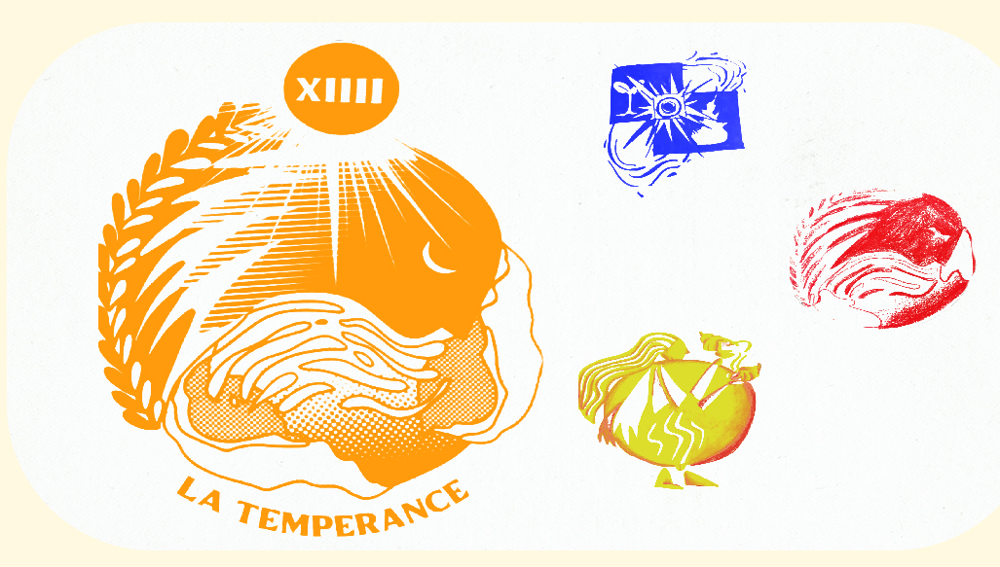
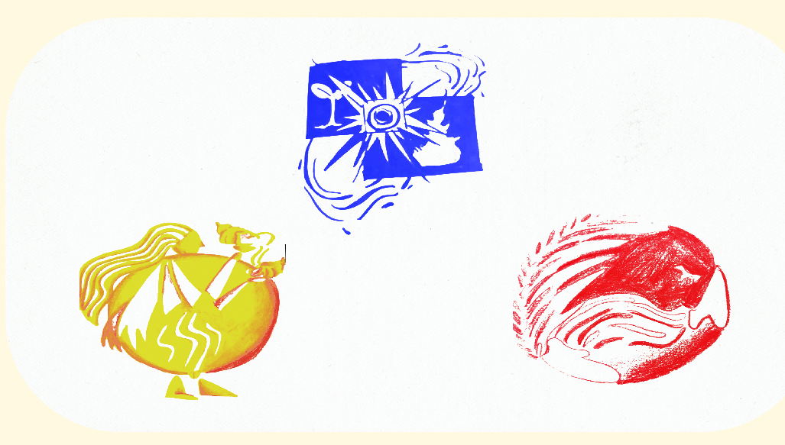

Lélé Leloutre

Illustration
Carte du tarot
Initiation à la sérigraphie via un travail de design. Une carte nous était attribuée au hasard, et notre but était de lui donner un nouveau logo. Je me suis vu attribuer la carte de la tempérance, et j’ai donc fait des analyses sur le sens tarologique de cette carte, puis je l’ai illustré avec des éléments sémiologiques faisant sens avec ce que le carte est. 